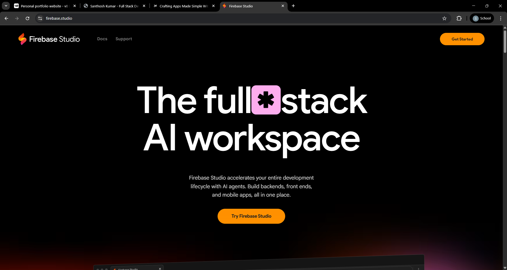
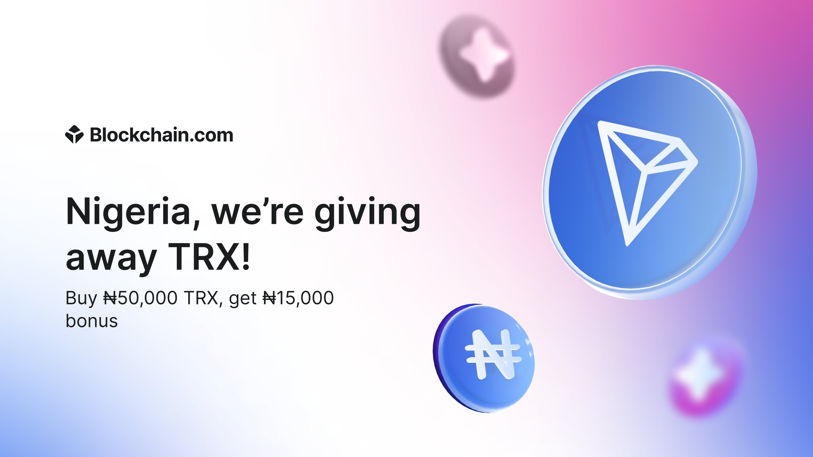

Crafting Apps Made Simple with Google Firebase Studio
A practical look at how Firebase Studio lowers the barrier between an app idea and a working product.
Read articleI build accessible, user-focused products from React interfaces to Flask APIs and blockchain infrastructure.
01const developer = {
02 name: 'Santhosh Kumar',
03 role: 'Full Stack Engineer',
04 stack: ['React', 'Python'],
05 focus: 'Accessible UX',
06 ships: 'end-to-end'
07};
08// Ready to collaborate
Full-stack engineer with hands-on experience owning features end-to-end, from React front-ends to Flask/Python back-ends and RESTful APIs.
I enjoy fast-moving Agile teams, thoughtful UX, and the details that make software feel intuitive. My projects explore accessibility, APIs, databases, and blockchain infrastructure.
AI-powered accessibility tool for neurodivergent users, combining text, speech, cognitive assessment context, and a 3D lip-sync avatar.
Decentralized crypto transaction platform with wallet connections, scheduled transfers, and live price tracking.
Milestone-based crowdfunding platform that releases funds only after milestone verification through smart contracts.
React.js · Flask · HTML · CSS · RESTful API design · UI/UX
Python · MySQL · Docker · API design · System design fundamentals
Solidity · Hardhat · Ganache · Web3.js · MetaMask integration
Git · GitHub · Agile / Scrum · Manual testing · Code review
Writing about tools, products, and the changing shape of the web. View all five articles

A practical look at how Firebase Studio lowers the barrier between an app idea and a working product.
Read article
A beginner-friendly breakdown of Blockchain.com’s TRON cashback campaign and how it works.
Read articleExploring how decentralized identity changes the way people own and prove who they are online.
Read articleA look at the scale and impact of Amazon’s growing robotics operation.
Read articleA concise tour through emerging cyber risks shaped by generative AI and automation.
Read articleVirtusa Consulting Services Private Limited · Remote
Owned the design and implementation of 5+ RESTful API endpoints using Python and Flask, connecting frontend interfaces to MySQL storage. Containerized environments with Docker and contributed to Git/GitHub code reviews and technical documentation.
Sri Krishna College of Engineering and Technology - Coimbatore
5-year integrated program ·
Have a product idea, technical challenge, or opportunity? I would be glad to hear from you.